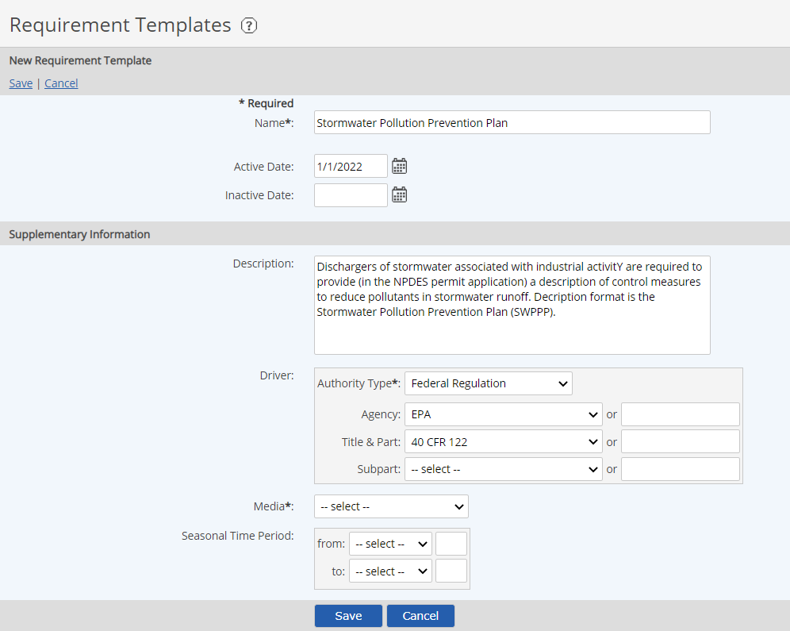

Requirement Templates must be created for each type of compliance requirement you want to track and report on in the system.
A Requirement Template defines:
The information in the Requirement Templates preferably should be generic. You can apply a Custom Field Template to a Requirement object to define more specific information if desired. Requirements inherit all the standard fields from the Requirement Template, plus any Custom Field Template applied.
Requirement Templates must be created before you can create any Requirement objects in the system model, as you must choose a Requirement Template during creation. However, you can apply a Custom Field Template to a Requirement later by editing.
To create a new Requirement Template:
Select New Requirement Template.
Or right click in the list and select New.
Enter a Name for the template.
Supplementary Information is optional but could include regulatory or permit details.

Active Date is the date when a requirement went into effect, or the earliest date when it could apply to a requirement for a facility, unit, or point of interest. The effective date determines when requirements (rules, regulations and permits) are applicable to system objects.
Expiration Date is the date when a requirement (rule, regulation or permit) is no longer effective. This date determines when data no longer needs to be collected or maintained for that requirement. For a permit, this is the date when it no longer applies (the date of expiration, termination, or revocation). For an enforcement action, this is the date when the order is closed.
When the expiration date is changed (for example, when a permit is renewed), the date is automatically changed in all of the applicable requirements that use the template.
In the Driver section, select the Authority Type from the dropdown list.
The pre-configured Authority Types include federal or state regulations, permits, enforcement actions or other (such as a company’s internal requirement).
After choosing a primary driver, you may select subsequent details, depending on the type of driver, from the appropriate lists, or enter a new item using the associated text box.
These standard fields are provided for your convenience. However, in some cases you may prefer to create a generic template for requirements of a certain type, then use custom fields to track specific information, which can be applied either to the Requirement or a parent object via a Custom Field Template.
Select the Media from the dropdown list.
Seasonal Time Period months (from and to) may be selected, if relevant.
A Requirement Template may be edited in order to modify properties such as the effective date, expiration date or driver information. These properties can only be edited on the Requirement Template, not on the individual Requirement object. Modifications to a Requirement Template are automatically applied to all Requirements associated with the template.
To edit a Requirement Template:
Right click the template in the Requirement Templates library and select Edit.